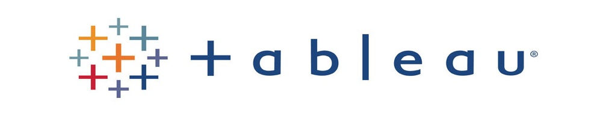
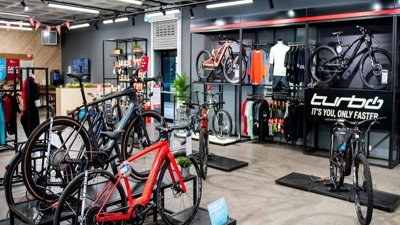

Quality Engineering for Enterprise FinTech
I lead quality across the delivery lifecycle — designing test strategy, building scalable automation frameworks,
and embedding quality gates into CI/CD so teams ship reliable financial software, faster.
Designing maintainable UI and service-level automation frameworks with reusable components, data-driven tests and clear reporting.
Functional, contract and integration testing of REST services — validating business rules, security and data integrity end to end.
Load, stress and soak testing to uncover bottlenecks and confirm systems meet throughput and latency targets under real-world traffic.
Integrating automated suites into build pipelines for fast feedback, shift-left testing and confident, repeatable releases.
Exploring AI-assisted test design, generation and maintenance to increase coverage and cut the cost of keeping suites healthy.
Defining test strategy, mentoring engineers, driving quality metrics and partnering with product and engineering on risk-based priorities.

Interactive dashboards built in Tableau Public.
Data exploration of a COVID-19 dataset in SQL.
Cleaning housing data in SQL Server.

Data visualization of bicycle sales in Excel.